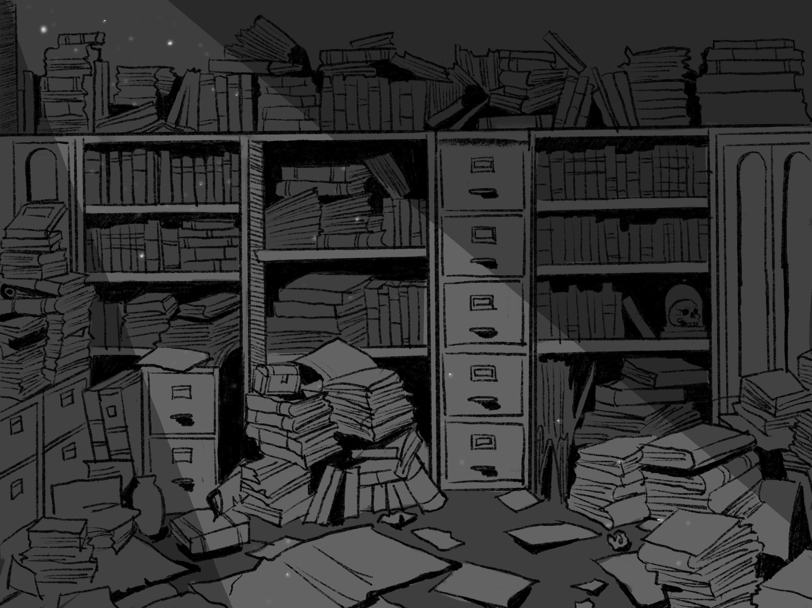
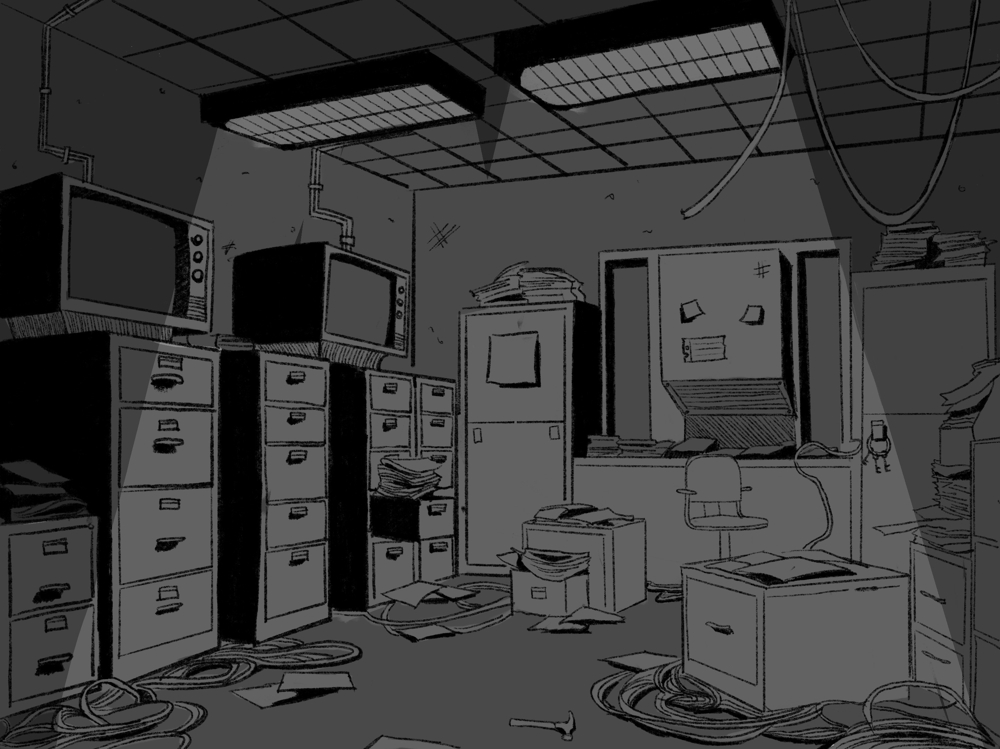
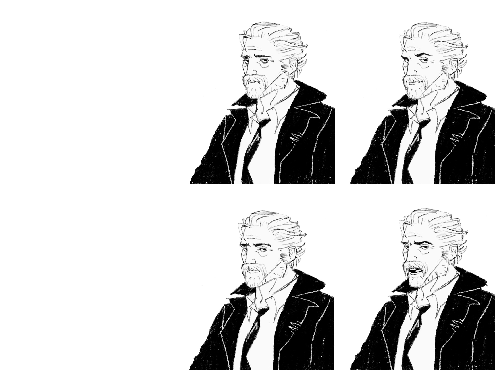
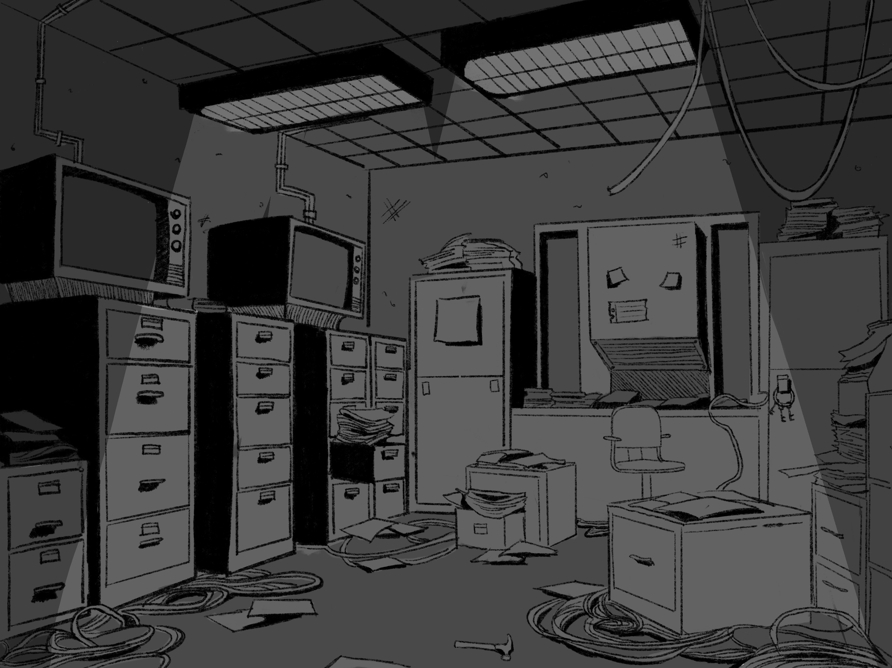
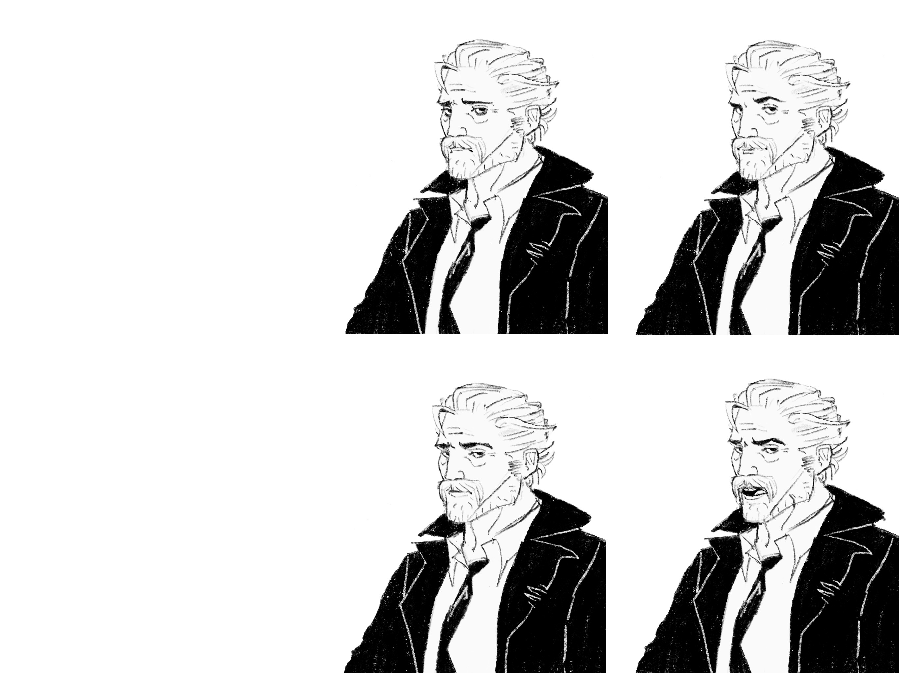
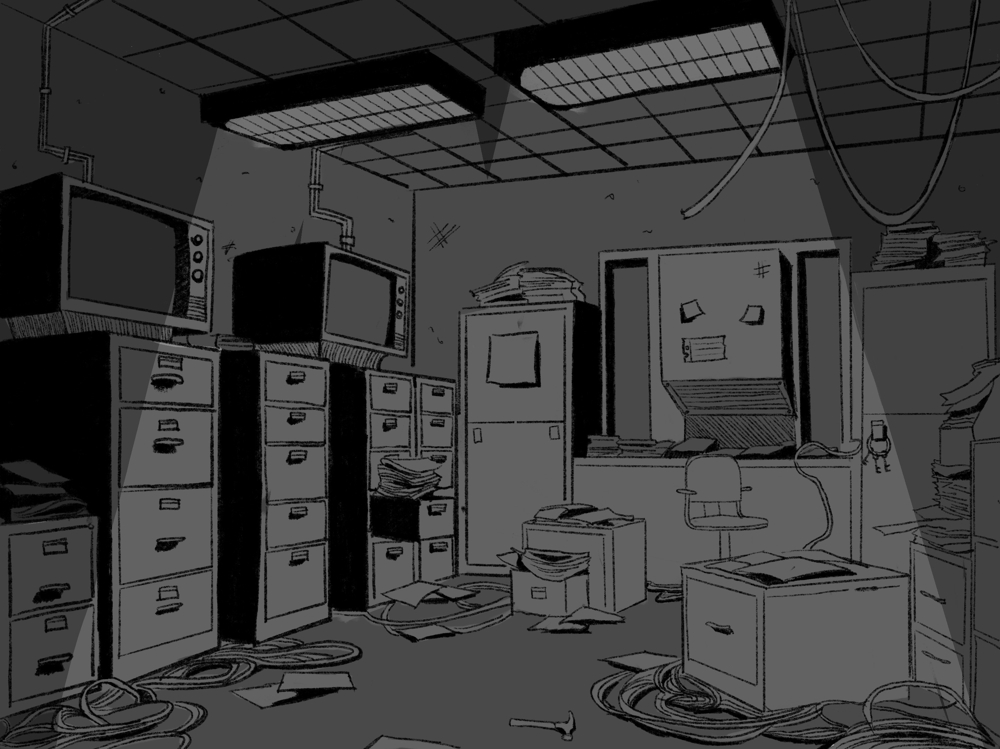
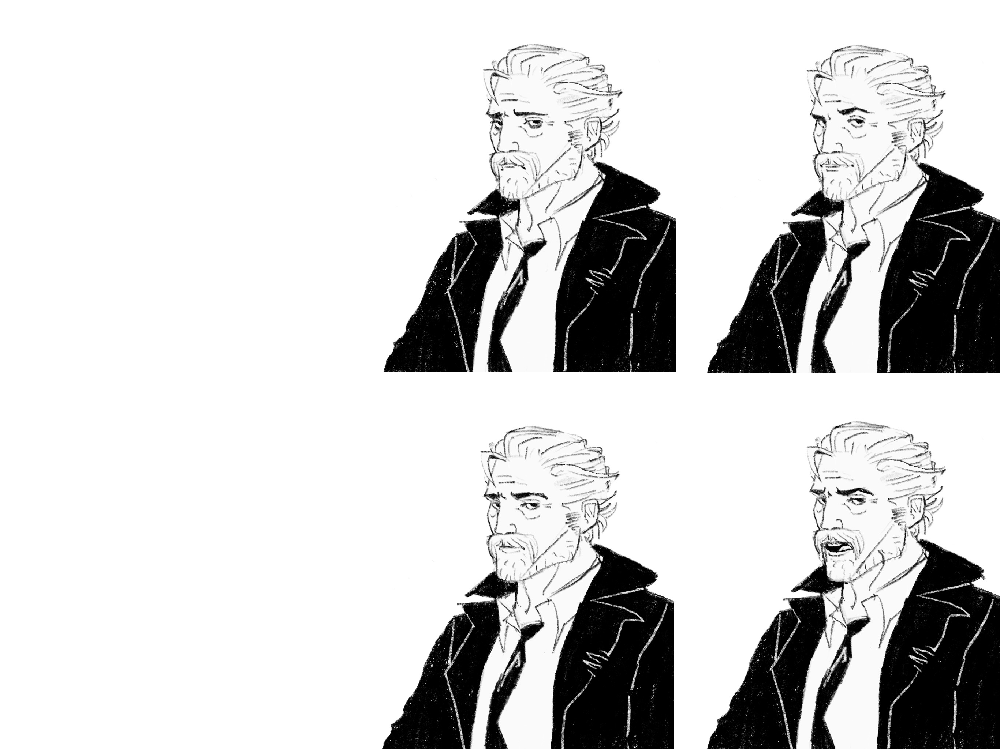

Covert Affairs

 





A captivating 2D noir point-and-click RPG mystery game that immerses players in a shadowy world of intrigue and deception.
Play the Game
Play Covert Affairs on itch.ioOverview
Covert Affairs combines classic point-and-click mechanics with RPG elements to create a rich narrative experience. Players navigate through a noir-inspired world, solving puzzles and uncovering secrets in a gripping mystery storyline.
Key Features
- Atmospheric noir visual design with hand-crafted 2D artwork
- Interactive dialogue system with branching narratives
- Puzzle-solving mechanics integrated into the story
- Character progression and inventory management
- Original soundtrack that enhances the noir atmosphere
Technical Implementation
Built using modern game development frameworks, the game features a custom dialogue engine, state management system, and scene transition mechanics. The point-and-click interface provides intuitive controls while maintaining the classic feel of the genre.